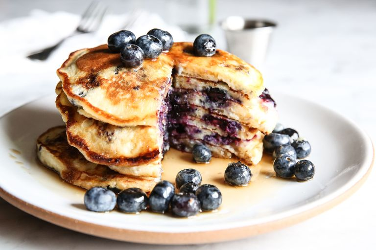

Blueberry Pancake Recipe

Cooking Info
- Serving size: 4
- Prep time: 5 minutes
- Cook time: 25 minutes
Ingredients
- 1 1/2 c. all-purpose flour
- 3/4 tsp. kosher salt
- 1 1/2 tsp. baking powder
- 3/4 tsp. baking soda
- 1 tbsp. sugar
- 2 1/4 c. buttermilk
- 1/2 tsp. pure vanilla extract
- 4 tbsp. melted unsalted butter, plus more for serving
- 2 large eggs, beaten
- 2 c. fresh blueberries, plus more for serving
- Maple syrup, for serving
Directions
- In a small bowl, mix flour, salt, baking powder and soda, and sugar together with a fork. In a large mixing bowl, combine buttermilk, vanilla, butter, and eggs until well-mixed. Fold in dry ingredients and blueberries until just incorporated. Do not over-mix (batter should be lumpy).
- Heat griddle or large non-stick skillet over medium-low heat. Add dab of butter and scoop 1/3 cup of batter on griddle. Cook for 2 minutes (bubbles will appear), then flip and cook 1 minute more. Pancakes should be golden brown.
- Repeat steps for remaining pancakes. Serve with butter, maple syrup, and blueberries.